équipent de tous les titans
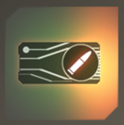
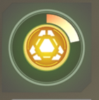
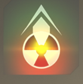
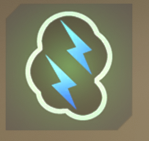
Auto-éjection furtive
éjection et camouflage automatique à la condamnation de votre
titan, évitant tout accident mortel.
Processeur d'assaut
Augmente la précision de votre Auto-Titan et permet d'activer
des capacités offensives et utilitaire
Moteur turbo
Titans Ronin, Northstar,Monarch et Tone : Vous octroie une
propulsion additionnelle
Titans Scorch et Légion : accélère la régénération de votre
propulsion
Charge du noyau
Votre Titan commence avec un noyau
préchargé à 20%
Éjection nucléaire
À l'éjection, votre Titan condamné fait exploser son noyau
nucléaire et inflige de lourds dégâts aux ennemis à procimité.
Anti-rodéo
Vous pouvez déployer une autre contre-mesure électrofumigène
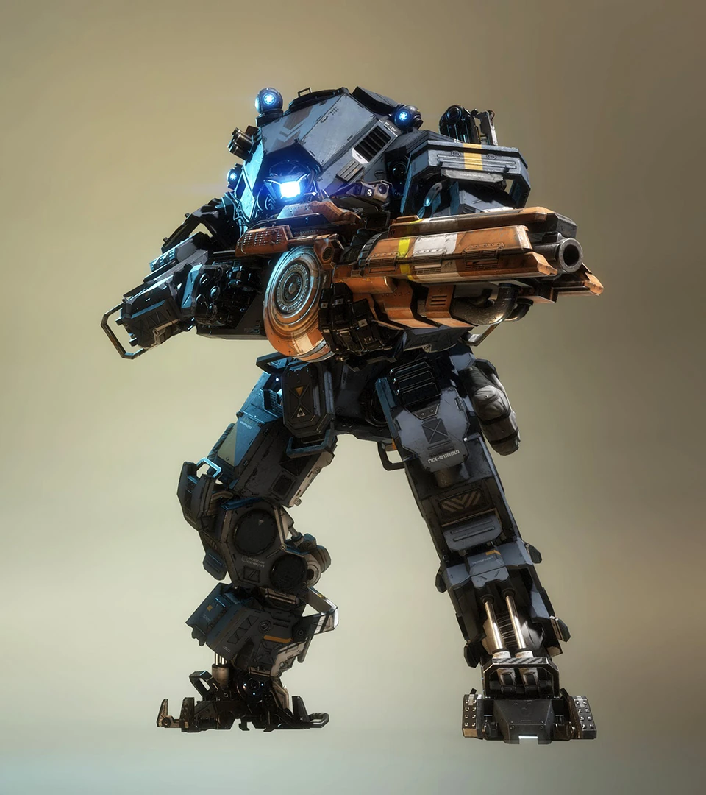
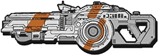
Fusil Splitter : principale: fusil auto.
secondaire: Tir scindé + puissant. *drain d'énergie
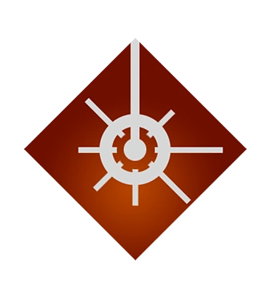
Tir laser : Laser de précision monté à l'épaule.*
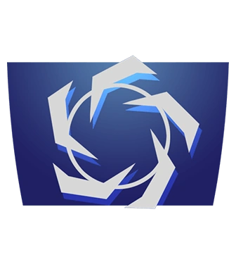
Bloque et renvoie les projectiles enemis.*
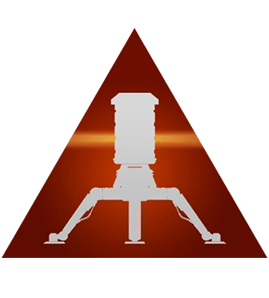
Mines explosives à déclanchement laser. *
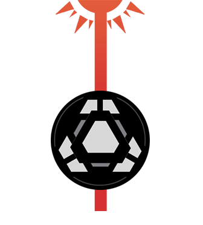
Noyau Laser (ultime): Puissant canon laser monté sur le torse
Kit titan Ion
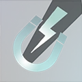
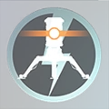
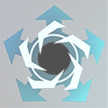
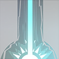
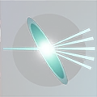
Fusion d'énergie
Les coups critiques du fusil Splitter vous redonnent de
l'énergie.
Mine à point zéro
Le déploiement de vos mines laser ne consomme pas d'énergie.
Amplificateur Vortex
Augmente de 35% les dégâts renvoyés par votre bouclier vortex
Canon longue durée
Votre noyau laser dure plus longtemps
Lentille de réfraction
Le tir du fusil Splitter se divise en 5
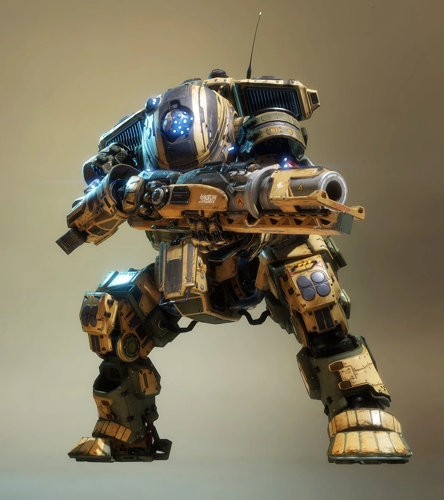
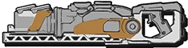
LANCE-GRENADES THERMIQUES T-203
Grenades thermiques géantes qui embrasent la zone d'impact.
MUR DE FEU Dresse un mur de flammes en direction des ennemis.
BOUCLIER THERMIQUE Fait fondre les projectiles ennemis et brûle les cibles à proximité.
PIÈGE INCENDIAIRE Remplit une zone-cible de gaz inflammable.
NOYAU DE FLAMME Onde de choc incendiaire qui submerge les cibles sur son passage.p>
Kit titan Scorch
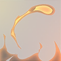
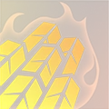
Incendie
Augmente les dégâts directs et améliore la zone d'effet du
lance- grenades thermiques T-203.
Placage trempé
Scorch immunisé contre les coups critiques et ses projectiles
thermiques.
Bouclier infernal
Votre bouclier thermique dure plus longtemps et inflige plus de
dégâts.
Combustible
La régénération de votre mur de feu est réduite de 2 secondes.
Terre brûlée
Votre noyau de flamme embrase le sol en laissant des résidus
thermiques dans son sillage.
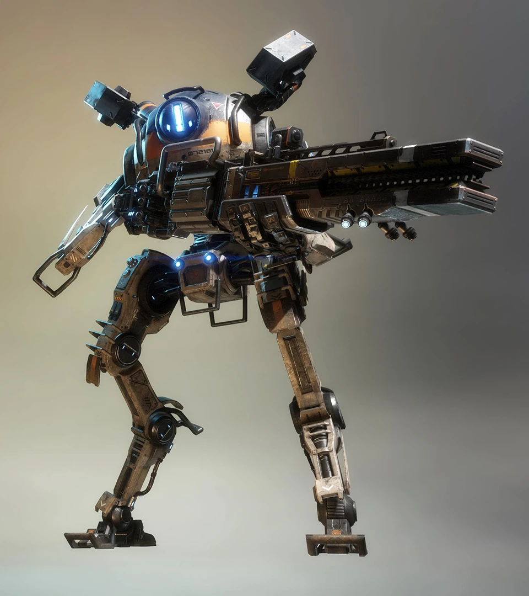
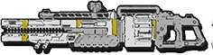
CANON PLASMA
Canon plasma de précision (charge pendant zoom). Maintenez pour
charger.
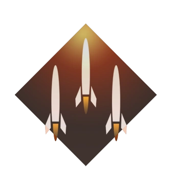
LANCE-MISSILES MULTIPLE Provoque des explosions continues à l'impact.
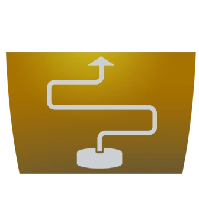
PIÈGE ANTI-TITAN Mine verrouillant les Titans ennemis à proximité.
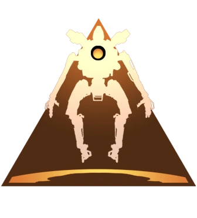
ADAV Système à décollage vertical.
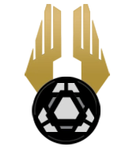
NOYAU DE VOL (ultime) Survolez le champ de bataille et décochez des missiles sur les cibles en dessous.
Kit titan Northstar
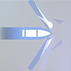
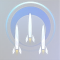
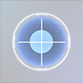
Tir perforant
Les tirs de votre canon plasma traversent les obstacles.
Charge optimisée
Les explosions secondaires du lance-missiles multiple durent
plus longtemps avec un meilleur rayon d'action.
Double piège
Double la capacité de votre piège anti-Titan.
Propulseurs Viper
Déplacements plus rapides lors du survol et de l'activation du
noyau de vol.
Optique offensive
Les ennemis apparaissent en surbrillance en mode zoom.
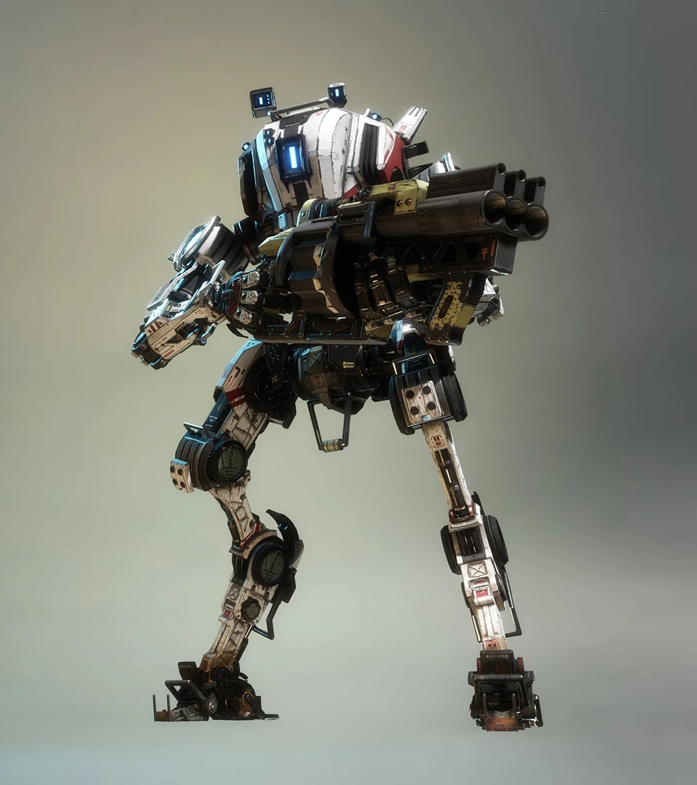
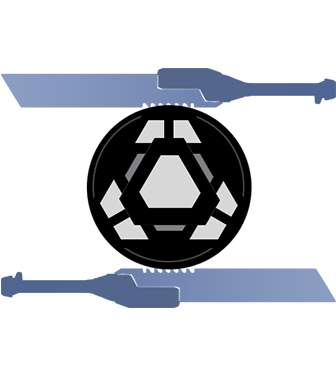
NOYAU D'ÉPÉE (ultime)
Électrifie votre épée pour améliorer vos attaques et autoriser des
parades.
BARRAGE Endommage et ralentit les ennemis.
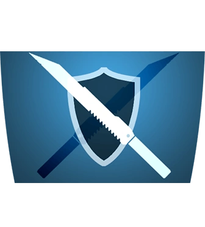
PARADE À L'ÉPÉE Réduit les dégâts provoqués par les tirs ennemis.
PROPULSION PHASIQUE Téléportation directionnelle ultra-rapide.
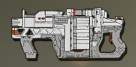
MUR DE PLOMBS Fusil à pompe équipé de projectiles à large dispersion.
Kit titan Ronin
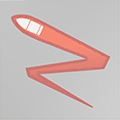
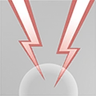
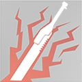
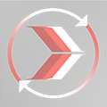
Ricochet
Les projectiles du mur de plombs rebondissent sur les surfaces.
Tonnerre
Votre capacité Barrage inclut deux charges.
Anomalie temporelle
Votre propulsion phasique est disponible plus souvent grâce à
une meilleure régénération.
Highlander
Les frags par Titan augmentent la durée de votre noyau d'épée.
Réflexe phasique
En cas de condamnation, le Ronin se téléporte hors de la zone
dangereuse.
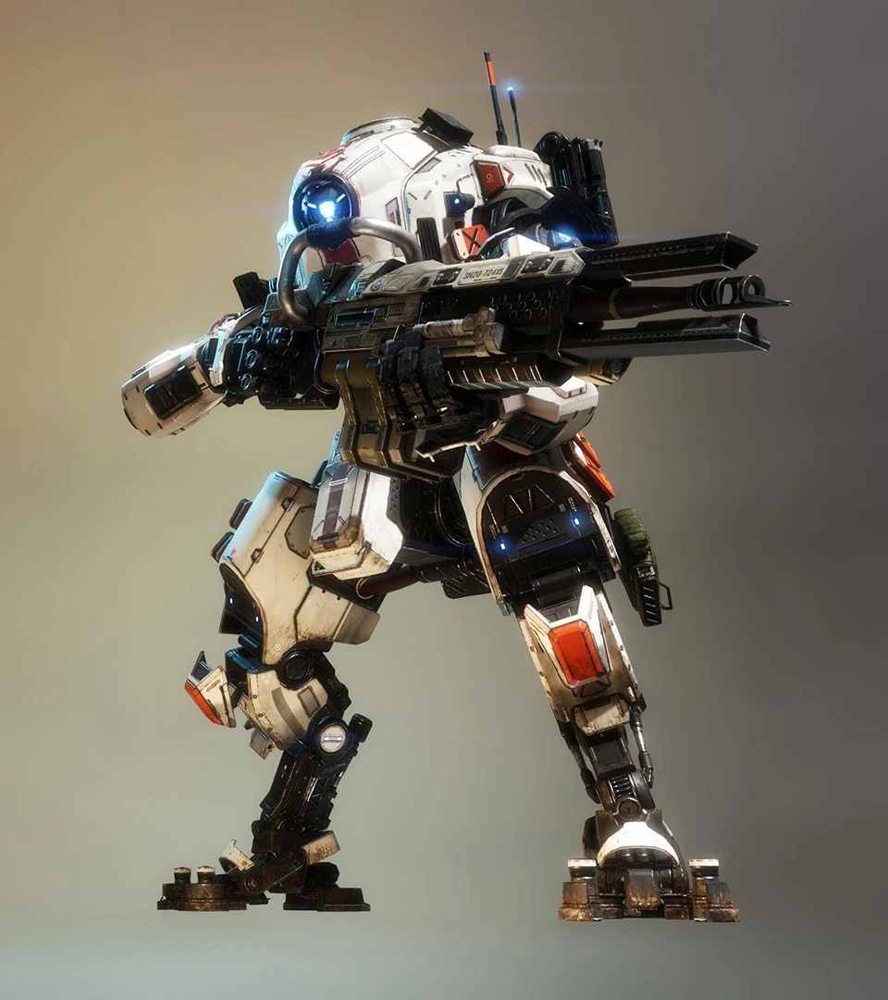
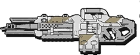
CANON TRAQUEUR 40 MM
Arme semi-automatique avec balles explosives. Verrouillage
partiel.
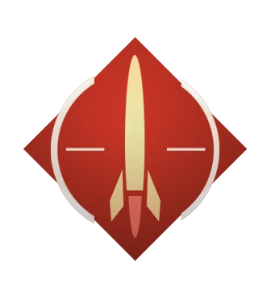
ROQUETTES TRAQUEUSES
Tire des missiles sur les ennemis verrouillés. Verrouillage
complet requis.
MUR DE PARTICULES
Champ de force qui bloque les tirs en approche mais laisse passer
les tirs émis.
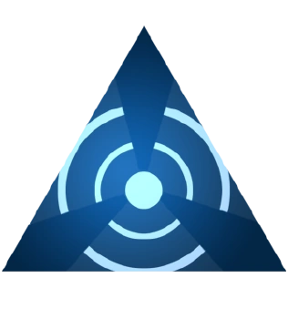
VERROUILLAGE SONAR
Révèle les ennemis dans la zone-cible. Verrouillage partiel.
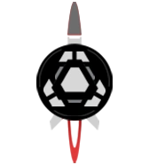
NOYAU DE SALVE (ultime)
Missiles guidés suivant la direction visée par le Titan Tone.
Kit titan Tone
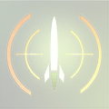
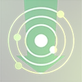
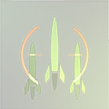
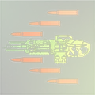
Traqueur optimisé
Les coups critiques activent un double verrouillage sur vos
cibles.
Mur de particules renforcé
Votre mur de particules dure plus longtemps et repousse plus de
dégâts.
Écho d'impulsion
Vous octroie une deuxième impulsion sonar après un court délai.
Pluie de roquettes
Vous pouvez lancer deux missiles guidés additionnels.
Chargeur de rafales
Visez pour équiper le canon 40 mm avec trois charges en rafale.
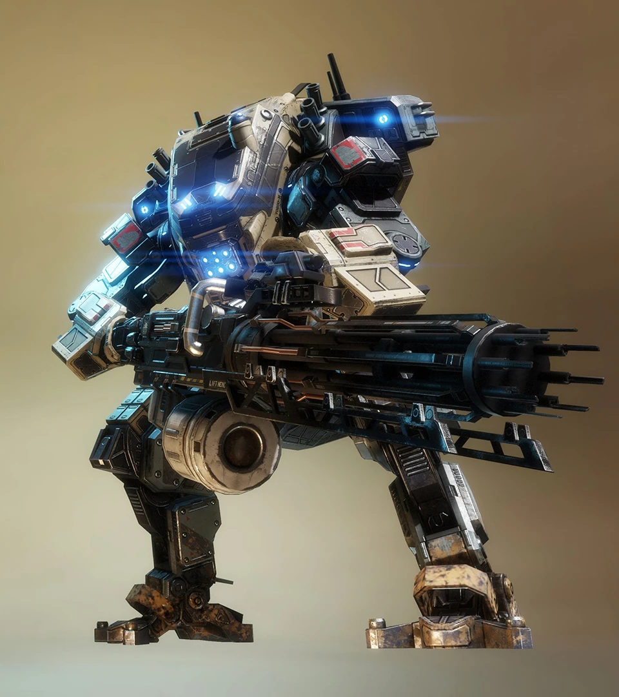
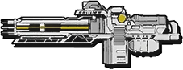
CANON PREDATOR
Puissante mitrailleuse à rotation longue
durée.
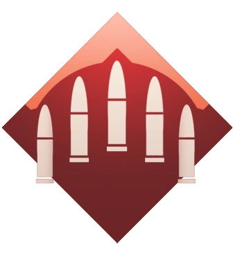
TIR PUISSANT
Courte portée : repousse les ennemis impactés. Longue portée :
endommage les ennemis visés.
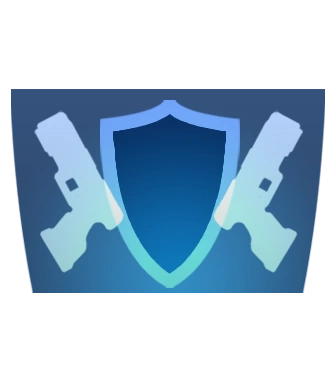
BLINDAGE D'ARMEMENT Déploie un blindage autour du canon Predator.
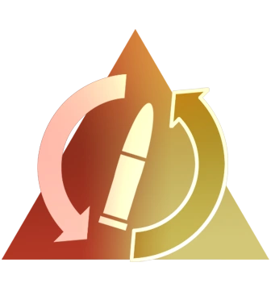
COMMUTATEUR DE MODE Alterne entre munitions de courte et longue portée.
NOYAU SMART (ultime)
Verrouillage automatique et intelligent des cibles ennemies.
Kit titan Légion
Compartiment caché
Le tir puissant dispose de deux charges. Dégâts réduits de 15 %.
Capteurs avancés
Votre noyau Smart dure plus longtemps.
Rempart
Votre blindage d'armement peut encaisser deux fois plus de
dégâts.
Alliage léger
Améliore votre vitesse de mouvement lors de l'utilisation de
votre canon Predator.
Capacité de tir bonus
Améliore la capacité de munitions du canon Predator.
XO-16
Fusil automatique 20 mm.
SALVE DE ROQUETTES Lance une nuée de roquettes non guidées.
SIPHON D'ÉNERGIE
Ralentit les ennemis et génère des boucliers. Les cibles à
blindage lourd accélèrent leur génération.
RÉARMEMENT
Optimise la régénération de votre propulsion, de vos capacités
offensives et défensives.
NOYAU D'OPTIMISATION (ultime)
Recharge vos boucliers et optimise progressivement votre Titan.
Kit titan Monarch
Amplificateur blindage
Augmente de 25 % le gain de blindage du siphon d'énergie.
Vol d'énergie
La jauge de votre Titan se régénère 10 % plus vite et les
exécutions de Titans ennemis vous octroient une batterie.
Remarque : remplace votre exécution existante.
Réarmement rapide
Réduit la phase de réarmement de 5 secondes.
Survie du plus fort
Vos batteries peuvent annuler la condamnation du Monarch.
Optimisation de noyau 1
Munitions à arc
Les projectiles du XO-16 infligent plus de dégâts aux boucliers
ennemis et drainent l'énergie des boucliers Vortex et
thermiques. Améliore votre capacité en munitions.
Transfert d'énergie
Les Titans alliés touchés par votre siphon d'énergie bénéficient
d'un bonus de blindage.
Double charge
Votre salve de roquettes comporte deux fois plus de missiles.
Optimisation de noyau 2
Réarmement et rechargement
Phases de rechargement et de réarmement plus rapides.
Maelström
Charge électrofumigène intensifiée qui inflige plus de dégâts
aux Titans et aux pilotes ennemis.
Champ d'énergie
Votre siphon d'énergie affecte une grande zone-cible autour du
point d'impact.
Optimisation de noyau 3
Missiles multi-cibles
Prolongez votre salve de roquettes pour verrouiller les cibles à
blindage lourd. Vos missiles infligent plus de dégâts.
Châssis supérieur
Optimise la santé maximale du Monarch et désactive ses points
faibles.
Accélérateur XO-16
Installe la modification Accélérateur pour le XO-16, qui
améliore sa cadence de tir et sa puissance.